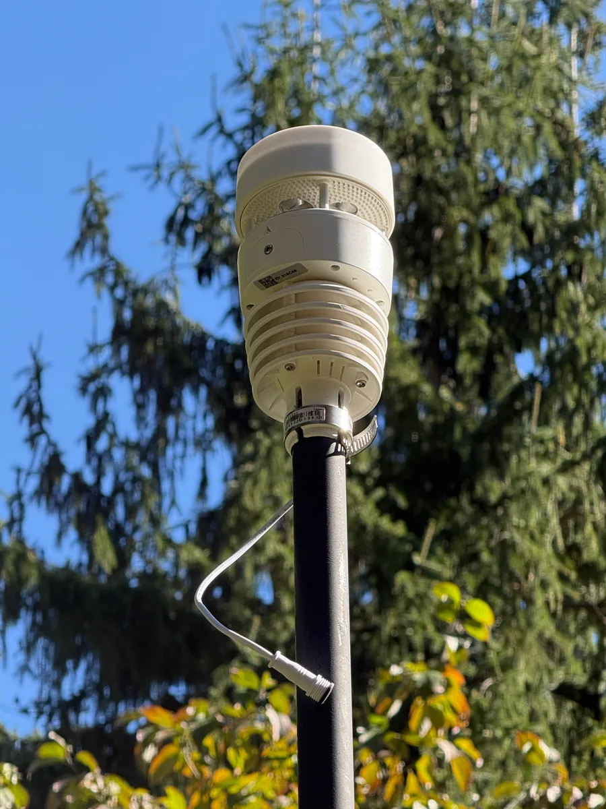

Next 12 hours, by Zambretti
My station reads its own sea-level pressure, the 3-hour trend, the wind direction and the season, and picks one of the 26 Zambretti forecasts.
Wind right now
Humidity
Feels like
Today so far
Wind since midnight
Longer spokes mean the wind blew from that direction more often; color shows average speed.
Rain
Pressure
Sun & UV
Dew point
Air dryness (VPD)
VPD is the gap between how much water the air could hold at this temperature and how much it actually holds, measured in kPa. The higher it is, the faster your plants lose water through their leaves.
Lightning
My Ecowitt WH57 lightning sensor is on its way. Once it's installed, this card will show how far away the latest strike was and how many strikes it has counted today, out to 40 km (25 miles).
Lightning is within 16 km (10 miles), so head indoors and stay there until 30 minutes after the last strike.
Sensor power
My WS90 outdoor sensor runs on a small solar panel that charges a capacitor, with AA batteries as backup.
The last 24 hours of temperature
Low … · High … (drag the dot back)The last 24 hours of wind
Average … · Strongest gust … (drag the dot back)You moved some boxes.
Radar around Princeton
Where rain, snow or hail is falling and how hard, over the last 50 minutes, updated every 5 minutes.
What am I looking at?
The map shows rain, snow and hail that is falling, not clouds, so a dry overcast sky leaves it clear. Radar sends out microwave pulses and measures what bounces off falling drops, flakes and hail, and cloud droplets are too small to show up.
The colors show how strong the echo is, which tracks how hard it is coming down. Snow sends back a weaker echo than rain, so a steady snowfall can look lighter on the map than it is.
Light colors over Princeton can mean rain or snow that evaporates before it lands, and faint specks on a clear night are usually birds, insects or ground clutter. My station's rain gauge is the final word on what reached the ground here.
Iowa State University's Iowa Environmental Mesonet stitches the lowest scans of about 140 National Weather Service radars into this map every 5 minutes. The nearest one is the Weather Service's Philadelphia radar, KDIX, near Fort Dix, about 30 miles (49 km) southeast.
Records
Loading the station's history…
Rain totals
Frost and the garden
Growing degree days add up each day's average temperature above 50 °F. Most garden crops and insects develop in step with them.
This week against last year

About this station
This is my Ecowitt Wittboy Pro, installed in my Princeton backyard in October 2026. Every minute its HP2560_C console sends the latest readings straight to this page and to ecowitt.net. Its WS90 sensor array packs temperature, humidity, wind, solar radiation, UV and rain into one solar-charged unit, and its piezo rain gauge works from the tap of each drop. The barometer sits in the console indoors, the wind comes from the WS90, and the forecast follows Negretti & Zambra's 1915 Zambretti method.
How this page works
The readings come from an Ecowitt Wittboy Pro I installed in my backyard on 19 October 2026. Its console sends readings to a small program, a Cloudflare Worker, every minute, so the numbers are usually under a minute old. Ecowitt's service supplies history and steps in if the console stops. Every hour the Worker saves the readings to a database and updates a daily summary. Records and the 7- and 30-day charts come from that history. The radar comes from the National Weather Service. I built it with my own team of AI agents on Claude Code over two days.